Настоящие инопланетные пейзажи
Для съёмок необычного мира команда отправилась в Марокко и на остров Сокотра, известный своими необычными природными ландшафтами.
Таинственный мир, опасная экспедиция и история, которая выходит за пределы привычной реальности.
Сейчас в плеере — трейлер фильма с Rutube. Полная версия фильма пока не подключена. Открыть трейлер на Rutube.
После несчастного случая Дима Хруст начинает вспоминать удивительные пейзажи Девятой планеты, базу землян, своих сослуживцев и Полину. Но воспоминания его друзей совсем другие. Когда Полина появляется в реальной жизни, Дима понимает: ответы нужно искать там, откуда всё началось.
«Девятая планета» — российский фантастический боевик режиссёра Николая Рыбникова с Юрой Борисовым и Ириной Старшенбаум. Премьера в России состоялась 24 сентября 2026 года. На этой странице подготовлен раздел для просмотра полного фильма, можно узнать сюжет без раскрытия концовки, познакомиться с актёрами и рассмотреть кадры.
Главный герой — автомеханик Дмитрий Хруст. После несчастного случая он вспоминает службу на далёкой планете и встречу с Полиной, хотя окружающие помнят совершенно другие события. История соединяет фантастику, приключение и загадку о человеческой памяти.
Для съёмок необычного мира команда отправилась в Марокко и на остров Сокотра, известный своими необычными природными ландшафтами.
Часть работы проходила на Сокотре в непростых условиях: съёмочная группа жила в палатках вдали от привычной инфраструктуры.
Для фильма построили масштабную декорацию земной базы в кинопарке «Москино».
Звуковое постпроизводство картины проходило на базе Тонстудии «Мосфильма».
Знакомьтесь с актёрским составом фантастического фильма. Информация о персонажах будет добавлена после подтверждения ролей.
.jpg)

.jpg)


В галерее собраны 15 кадров фантастического фильма «Девятая планета» (2026). Листайте фотографии и нажимайте на изображение, чтобы рассмотреть его крупнее.
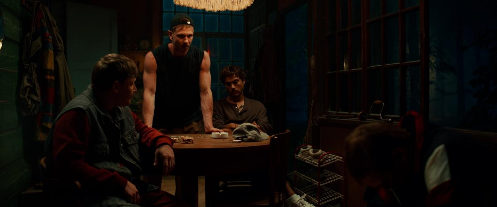
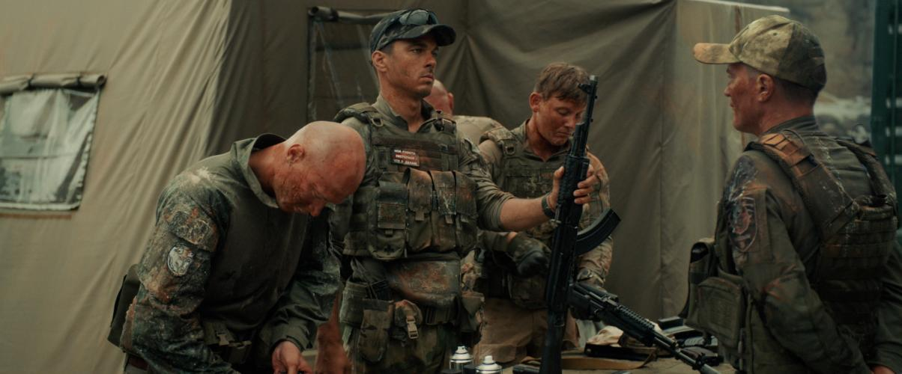
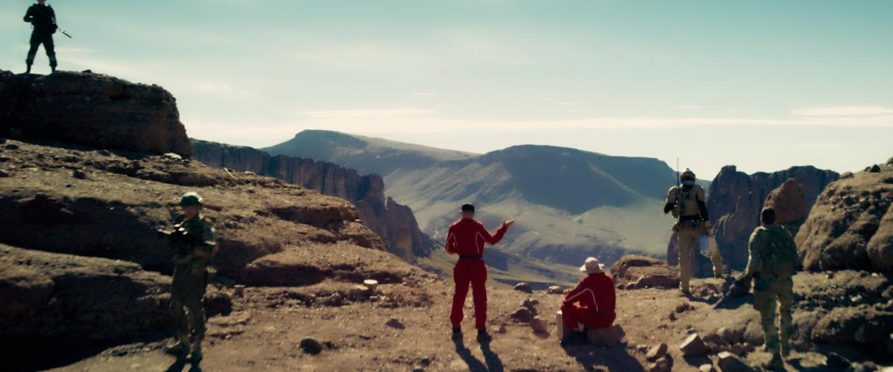
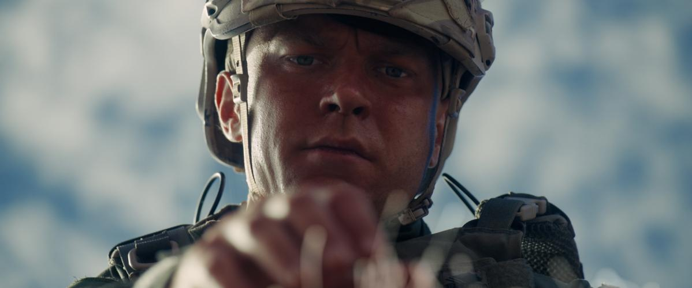
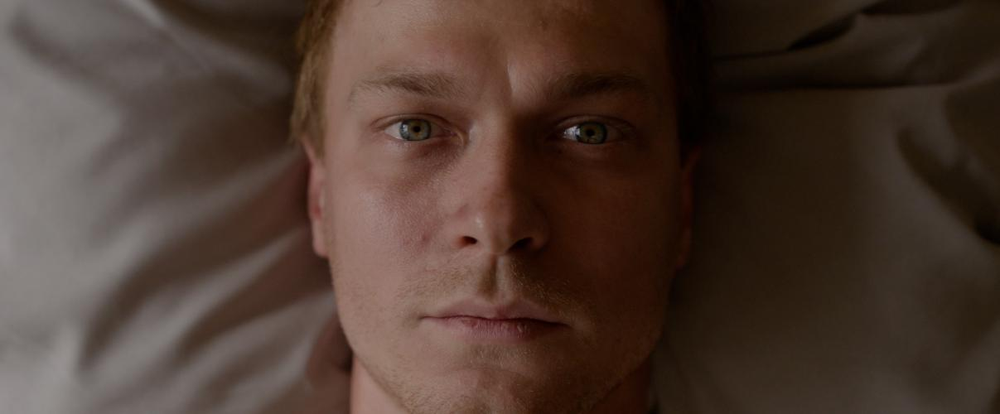
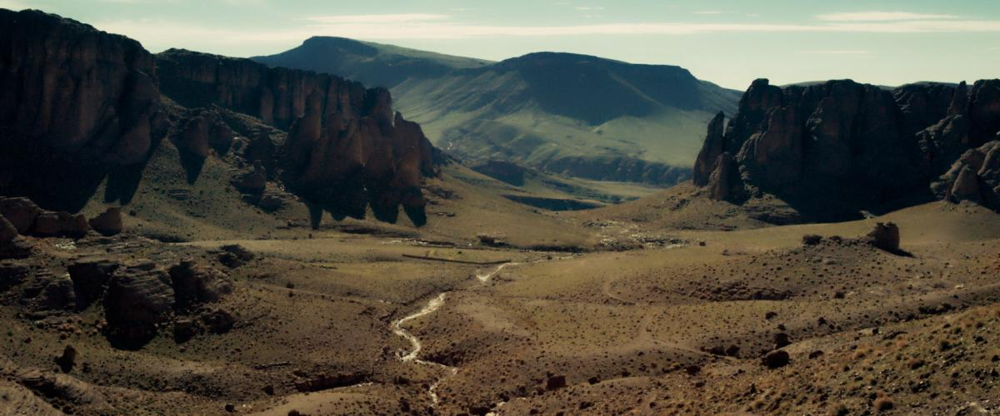
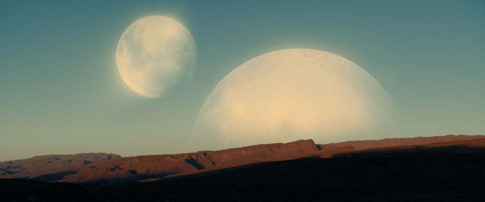
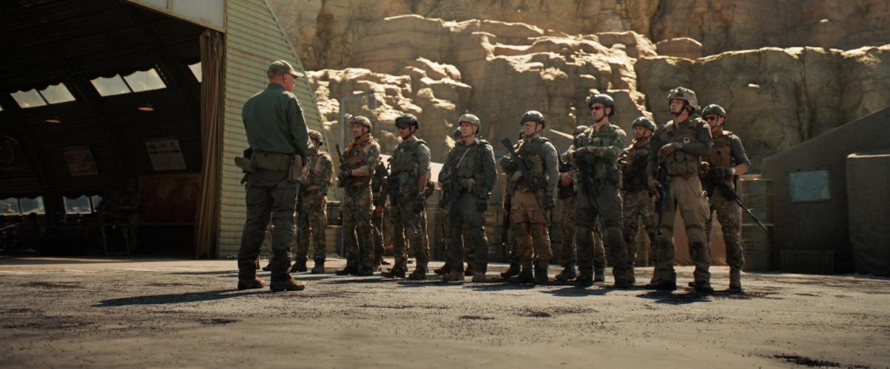
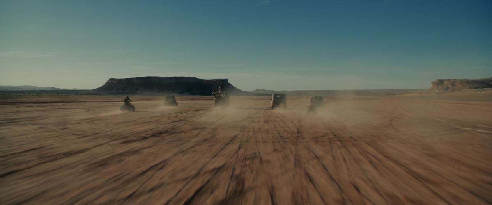
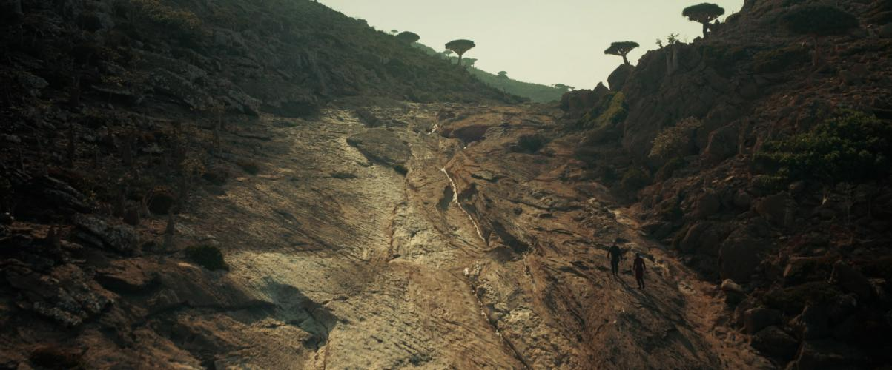
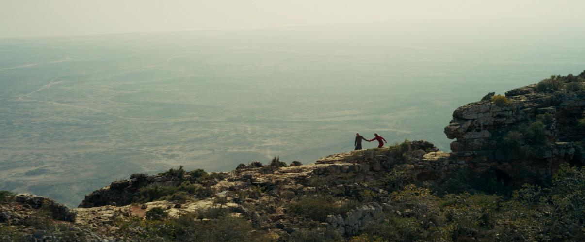
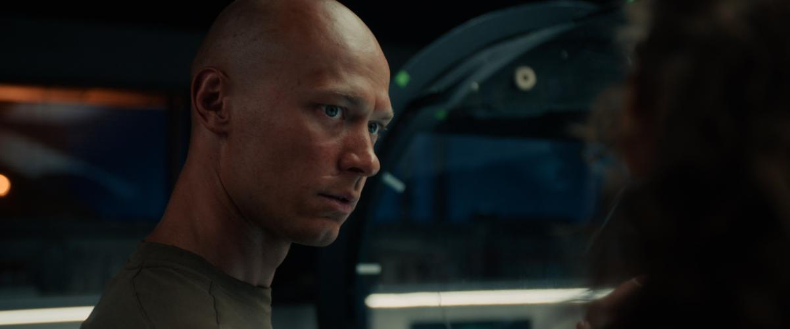
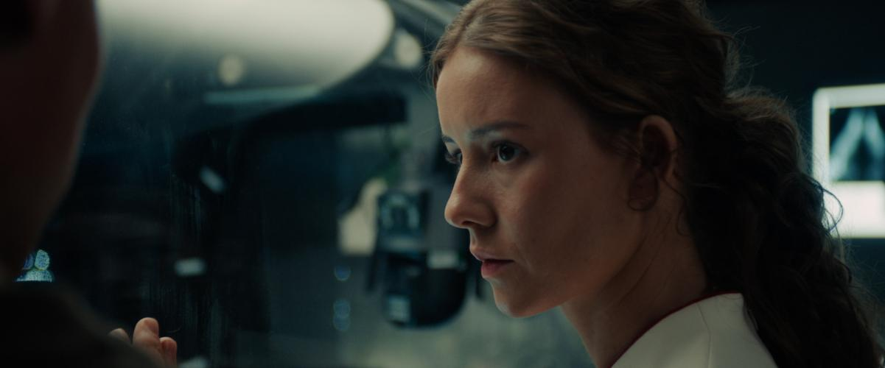
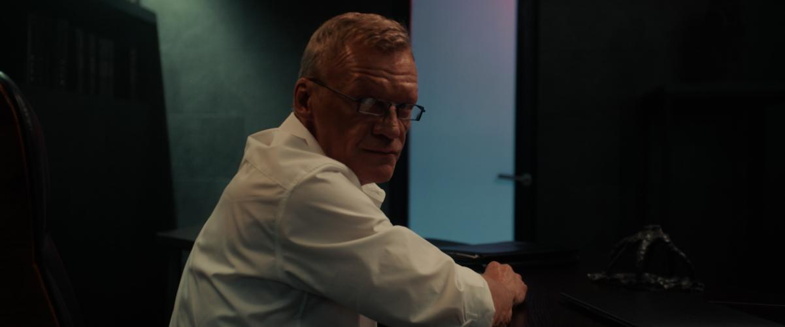
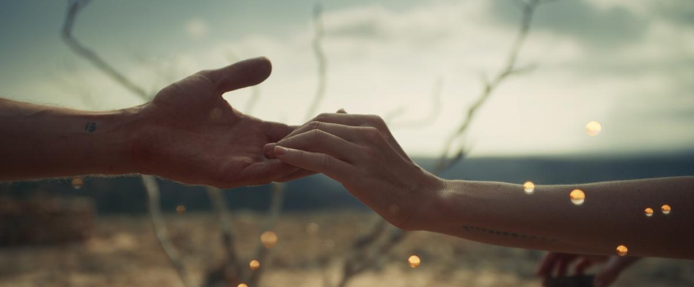
Российская премьера состоялась 24 сентября 2026 года. Продолжительность фильма — 1 час 43 минуты, возрастное ограничение — 16+.
После несчастного случая Дмитрий Хруст вспоминает загадочную планету и девушку Полину. Не совпадающие с воспоминаниями друзей события заставляют его искать правду о прошлом.
Режиссёр — Николай Рыбников. Среди актёров — Юра Борисов, Ирина Старшенбаум, Алексей Серебряков, Максим Емельянов и Константин Белошапка.
Раздел просмотра полного фильма подготовлен, но плеер ещё не подключён. Кадры фильма доступны в галерее.
Сведения о премьере, создателях и продолжительности: Кинопоиск.